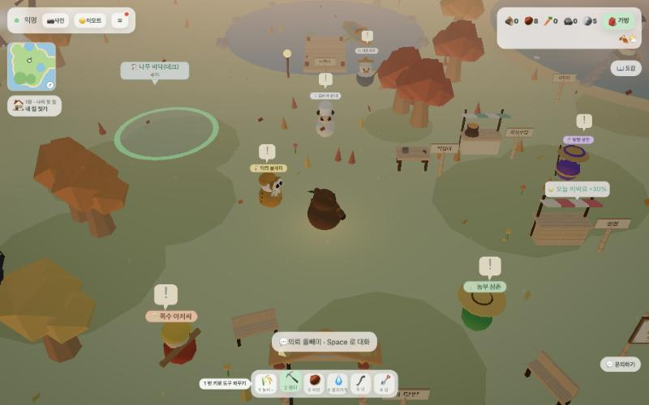
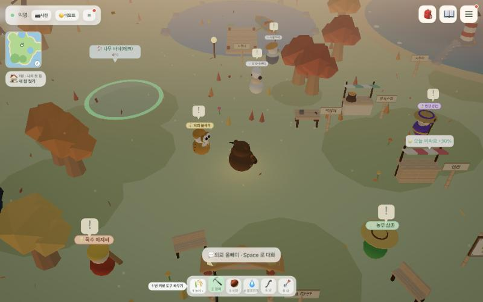
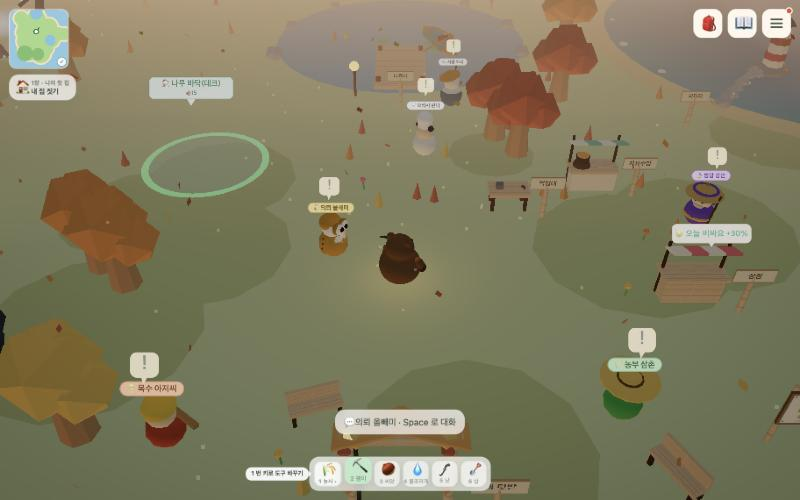
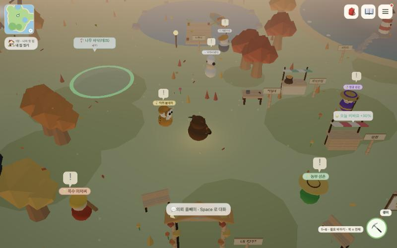

모바일에서 정리한 방향을 PC에 어디까지 가져올지. 공통: ☰ 카드 메뉴·섬 미니맵·자동 도구·닉네임은 이미 PC에도 적용됨

지금PC 그대로
왼쪽 위 상태·📷사진·🙂이모트·☰ 줄, 오른쪽 위 재화 칩 5종+가방+계절, 따로 뜬 📖도감·💬문의하기 탭, 하단 숫자 도구바.

A오른쪽 위만 정리
오른쪽 위를 🎒📖☰ 세 버튼으로(재화는 가방 안 요약 줄, 도감·문의하기 탭 제거). 왼쪽 위 📷🙂☰ 줄과 하단 숫자 도구바는 그대로 — 키보드 조작 변화 0.

BA + 왼쪽 열 정리
왼쪽 위 버튼 줄을 없애고(📷🙂는 ☰ 카드 안으로) 의뢰 → 미니맵 → 스토리 칩 순서로 붙임. 모바일과 같은 배치라 안내서·스샷을 한 벌로 쓸 수 있다. 하단 숫자 도구바는 그대로.

CB + 도구바도 버튼 하나로
하단 도구바를 오른쪽 아래 도구 버튼 하나로 접음(숫자 1~6·마우스 휠로 바꾸기, 꾹/클릭 = 부채꼴 전체). 화면이 가장 넓지만 PC 유저가 익숙한 '보이는 도구바'가 사라진다.